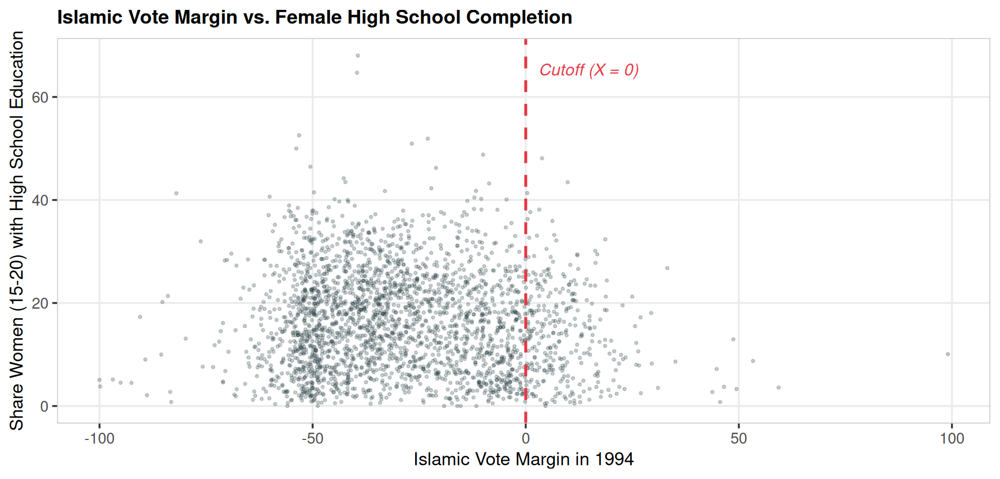
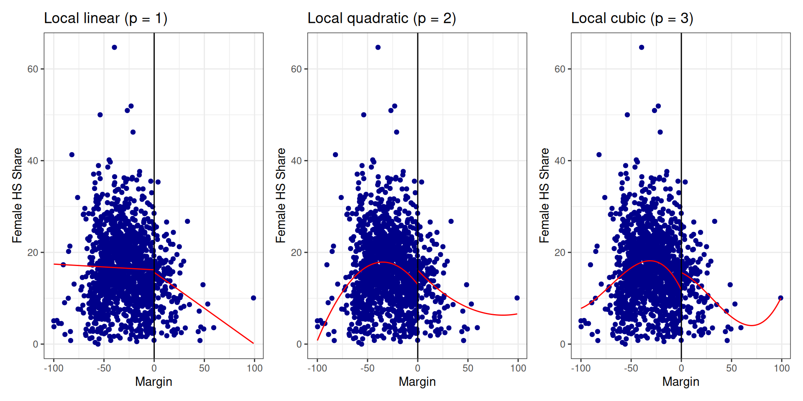
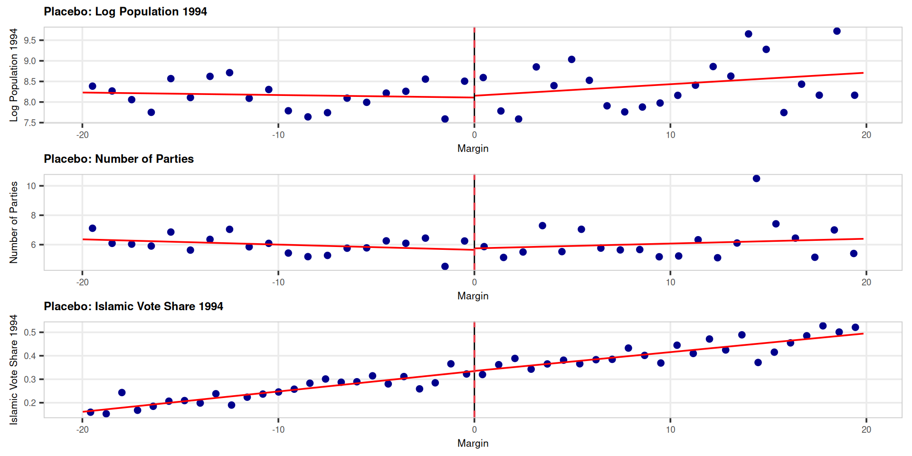
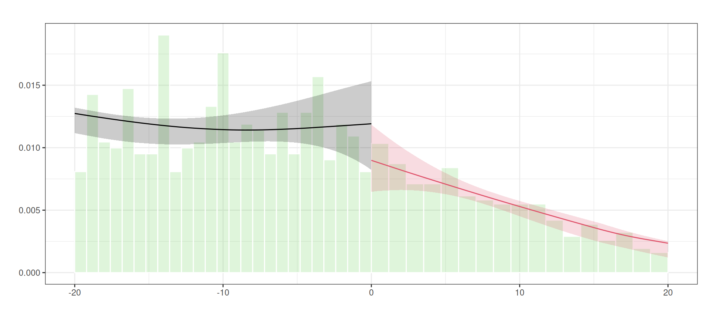
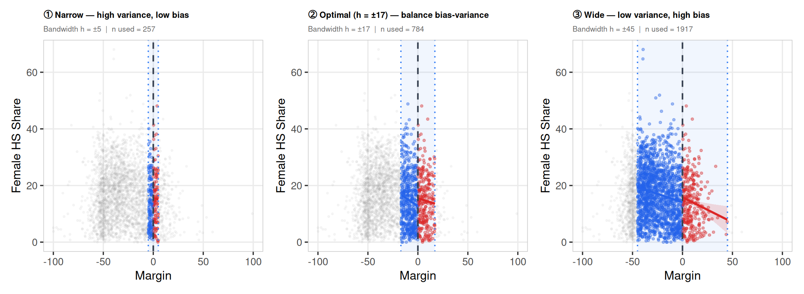

Policy analysis and policy evaluation – Spring semester 2025-2026
Seminar 6: Regression Discontinuity Design
2026-04-20
Today
We will study Meyersson (2014), “Islamic Rule and the Empowerment of the Poor and Pious”. We will see how Regression Discontinuity Design can be used to estimate causal effects and replicate the main results of the paper.
Spoiler alert
The naive estimate and the causal estimate will point in opposite directions. Keep that tension in mind throughout the tutorial \(\rightarrow\) best advertisement for credible identification strategies.
Understanding the Research Context and Main Findings
Q1 – What is the research question?
Summarize in your own words the primary research question addressed in the paper. What concerns do the authors raise about the impact of Islamic political control on women’s empowerment?
➡️ The paper asks a deceptively simple question: does Islamic political control hurt women’s education? The raw data says yes… but Meyersson suspects this is spurious. Conservative municipalities may elect Islamic parties and have lower female education for the same underlying reasons (religion, culture, income). The RD design is his way of separating the government’s causal impact from the pre-existing characteristics of the places it governs.
Correlation is not causation
This is a textbook problem in political economy: the type of government a place gets is not random. It reflects history, culture, and economic conditions. Any study that simply compares outcomes across different governments is measuring a mix of the policy effect and the pre-existing differences between places. Meyersson’s contribution is precisely to disentangle these two.
Q2 – Why Turkey?
Describe the institutional context in Turkey as presented in the paper. Why is Turkey considered a suitable setting for studying the effects of Islamic political rule on educational outcomes?
➡️ Turkey offers a near-ideal quasi-experimental setting. It is a secular republic with competitive multi-party elections, but the pro-Islamic Refah Party made major gains in the 1994 local elections, winning mayoral seats across a wide range of municipalities. This creates within-country variation in governance type: some municipalities got Islamic mayors, others didn’t, and the margin was often razor-thin.
What makes a good natural experiment?
Not every country generates clean variation. Compare Meyersson’s design to a cross-country study that contrasts Turkey with Iran or Saudi Arabia \(\rightarrow\) you would immediately confound Islamic governance with vastly different legal systems, colonial histories, and development levels. The within-country RDD sidesteps all of that. Same country, same year, same national laws \(\rightarrow\) the only difference is who happened to win the local election.
Q3 – Outcome variables
Identify the main outcome variables examined by Meyersson. Which educational measures are used (e.g., high school completion, enrollment), and for which age cohorts?
➡️ The main outcome is the share of women aged 15–20 with completed high school. The paper also examines enrollment rates for 15–30 year-olds.
How would using women of age 30-35 be called?
Choosing the good cohort and falsification tests
The 15–20 year-old cohort in the outcome data was of school age during the treatment period \(\rightarrow\) they were the students whose decisions were potentially shaped by the 1994 Islamic mayors. Picking an older cohort (who had already finished school before 1994) would be a falsification test, not a causal estimate. Outcome choice is itself an identification argument: you must show that the cohort was actually exposed to the treatment.
Q4 – Raw associations vs. causal estimates
The paper contrasts raw (unconditional) correlations with causal estimates obtained via the RD design. What is the observed sign and magnitude of these raw associations, and how do they change when an RD design is implemented?
➡️ The raw data tells a damning story: municipalities with Islamic mayors have lower female education. The naive analyst concludes: Islamic rule harms women. The RD design tells the opposite story \(\rightarrow\) a positive causal effect of approximately +3 percentage points on high-school completion, a ~20% increase over the baseline mean. This is not a smaller positive effect \(\rightarrow\) it is a complete reversal of sign.
| Approach | Direction | Magnitude |
|---|---|---|
| Raw correlation | ❌ Negative | Islamic rule hurts education |
| RD estimate | ✅ Positive | Islamic rule boosts female HS completion by 3 pp |
The sign can reverse… and it has implications
Without a credible identification strategy, we would draw exactly the wrong conclusion from the data This is why econometrics is NOT just a technical exercise: the wrong method here produces a harmful policy conclusion (and could inform wrong decisions in other contexts).
Methodology: Regression Discontinuity Design
The skeleton of an analysis based on RDD
Step 1 — Define the design
- What is the forcing variable \(X\)?
- What is the cutoff \(c\)?
- Is the design sharp or fuzzy?
Step 2 — Estimate the effect
- Choose a polynomial degree \(p\)
- Choose a bandwidth \(h\)
- Run the local regression
Step 3 — Validate the design
- Density test: was the forcing variable manipulated?
- Placebo outcomes: do pre-determined variables jump at the cutoff?
- Bandwidth sensitivity: is the estimate stable?
Step 4 — Interpret
- What population does the LATE apply to?
- What is the mechanism?
Questions 5–8 cover Steps 1–2. Questions 19–20 cover Step 3.
Keep this skeleton in mind. When you read an RD paper in the wild, you should be able to map every robustness table to one of these steps.
Q5 – What is an RDD?
Explain the fundamental idea behind a regression discontinuity design (RDD). What is the “forcing variable” in this study, and how is the cutoff defined?
➡️ RDD exploits a discontinuity in treatment assignment at a threshold of a continuous variable. The forcing variable here is the Islamic party’s margin of victory (Islamic vote share minus the top secular rival’s vote share). The cutoff is zero: above it, the Islamic party governs; below it, another party governs. Municipalities just above and just below zero are essentially identical.
Think of it as local randomisation
A municipality that won by 0.1 percent of the votes and one that lost by 0.1% are observationally indistinguishable. Nature ran the experiment for us. The RDD asks: what happens right at that line? The identifying assumption is that everything else (culture, income, religiosity) changes smoothly through zero. Only treatment assignment jumps.
Q6 – The baseline specification
The baseline specification in the model is the following: \[Y_i = \alpha + \beta M_i + f(X_i) + \varepsilon_i\]
- What does \(Y_i\) represent?
- How is the treatment indicator \(M_i\) determined?
- What role does the function \(f(X_i)\) play in the estimation?
➡️ \(Y_i\) is the share of women aged 15–20 with completed high school in municipality \(i\). \(M_i = \mathbf{1}[X_i > 0]\): the Islamic party won if and only if its margin was positive. \(f(X_i)\) is a flexible control for the running variable: it absorbs the smooth relationship between the margin and the outcome, so that \(\hat\beta\) captures only the jump at the cutoff, not the overall trend.
Parametric vs. non-parametric RDD
A single global polynomial fitted over all values of \(X\) can behave very badly near the boundary: shematically, it will use the flexibility to fit well to the extremes of the distributions, while we want it to handle non-linearities around the cutoff. Modern practice prefers local polynomial regression: fit flexibly only near the cutoff, discard distant observations (see next questions). The rdrobust package implements this automatically.
Q7 – Sharp or fuzzy?
In the present case, is the RDD fuzzy or sharp?
➡️ Sharp. When the Islamic party wins the election, it governs. There is no partial compliance, no opt-out. The treatment thus jumps from 0 to 1 exactly at the cutoff.
Sharp RDD \(\rightarrow\) treatment probability jumps from 0 to 1 at \(c\)
P(T=1|X)
1 | ●————————
| |
0 |————————●
|__________|_________ X
cDirect OLS gives the LATE at the cutoff.
Fuzzy RDD \(\rightarrow\) treatment probability increases at \(c\) but not to 1
P(T=1|X)
1 | ●————
| ●————
0 |————●
|__________|_________ X
cMust use IV (the cutoff instruments take-up). Estimate is LATE for compliers only.
Why does it matter?
In a fuzzy RDD you need an extra step \(\rightarrow\) the cutoff acts as an instrument for actual treatment. Meyersson’s sharp design is simpler and cleaner: winning the election is governing, so no IV correction is needed.
Q8 – Local linear regression & bandwidth
Discuss why a local linear regression (and the choice of bandwidth) is crucial in RDD applications.
➡️ Bandwidth \(h\) determines which observations enter the estimation. Too narrow: very few observations, high variance, imprecise estimates. Too wide: more power (statistical precision), but you are comparing municipalities that are increasingly dissimilar \(\rightarrow\) the “as-good-as-random” argument weakens. Local linear regression within the bandwidth is preferred because it reduces boundary bias relative to a local constant (degree 0) without overfitting.
The bias-variance tradeoff made concrete
The IK/CCT optimal bandwidth selector formally minimises the mean-squared error of the RDD estimator \(\rightarrow\) it finds the sweet spot between a very noisy narrow-window estimate and a very biased wide-window estimate. it’s the econometric equivalent of cross-validation (if you have heard about machine learning).
On the importance of sensitivity tests
In a well-identified RDD, the estimate should be stable across a range of bandwidths. If it collapses when you move from \(h = 20\) to \(h = 15\), the design is fragile. Always report a bandwidth sensitivity plot alongside the main result.
Practical Replication of the Main Results
Setup
Key variables
| Variable | Description |
|---|---|
Y |
Primary outcome (female HS share, 15–20) |
X |
Running variable (Islamic margin of victory) |
T |
Treatment indicator (Islamic party won) |
hischshr1520m |
Male HS share, 15–20 |
vshr_islam1994 |
Islamic vote share 1994 |
lpop1994 |
Log population 1994 |
partycount |
Number of competing parties |
merkezi, merkezp |
Province centre dummies |
Q12 – Descriptive statistics
Propose a summary table of the following characteristics.
desc_vars <- c("Y", "X", "T", "hischshr1520m", "vshr_islam1994",
"partycount", "lpop1994", "ageshr19", "ageshr60",
"sexr", "shhs", "merkezi", "merkezp", "subbuyuk")
descstats <- sapply(desc_vars, function(v) {
x <- df[[v]]
c(Mean = round(mean(x, na.rm = TRUE), 3),
Median = round(median(x, na.rm = TRUE), 3),
SD = round(sd(x, na.rm = TRUE), 3),
Min = round(min(x, na.rm = TRUE), 3),
Max = round(max(x, na.rm = TRUE), 3),
N = sum(!is.na(x)))
})
descstats <- as.data.frame(t(descstats))
descstats$Variable <- rownames(descstats)
descstats <- descstats[, c("Variable", "Mean", "Median",
"SD", "Min", "Max", "N")]
stargazer(descstats, type = "html", summary = FALSE,
rownames = FALSE, header = FALSE,
title = "Descriptive Statistics")| Variable | Mean | Median | SD | Min | Max | N |
| Y | 16.306 | 15.523 | 9.584 | 0 | 68.038 | 2,629 |
| X | -28.141 | -31.426 | 22.115 | -100 | 99.051 | 2,629 |
| T | 0.120 | 0 | 0.325 | 0 | 1 | 2,629 |
| hischshr1520m | 0.192 | 0.187 | 0.077 | 0 | 0.683 | 2,629 |
| vshr_islam1994 | 0.139 | 0.070 | 0.154 | 0 | 0.995 | 2,629 |
| partycount | 5.541 | 5 | 2.192 | 1 | 14 | 2,629 |
| lpop1994 | 7.840 | 7.479 | 1.188 | 5.493 | 15.338 | 2,629 |
| ageshr19 | 0.405 | 0.397 | 0.083 | 0.065 | 0.688 | 2,629 |
| ageshr60 | 0.092 | 0.085 | 0.040 | 0.017 | 0.272 | 2,629 |
| sexr | 1.073 | 1.032 | 0.253 | 0.750 | 10.336 | 2,629 |
| shhs | 5.835 | 5.274 | 2.360 | 2.823 | 33.634 | 2,629 |
| merkezi | 0.345 | 0 | 0.475 | 0 | 1 | 2,629 |
| merkezp | 0.023 | 0 | 0.149 | 0 | 1 | 2,629 |
| subbuyuk | 0.022 | 0 | 0.146 | 0 | 1 | 2,629 |
Always anchor your estimates to the mean
The mean of Y is 16.31. This is the baseline against which the RDD estimate will be judged. A 3 pp effect on a 15% mean is a 20% relative increase (quite important). Never report a point estimate without this anchor: large and small are relative concepts. That’s why we sometimes distinguish economically meaningful from statistically significant.
Q13 – Scatterplot
Do a scatterplot of Islamic margins against the outcome variable.
Before modelling anything, look at the raw data. What do you expect to see? Probably not a clean jump \(\rightarrow\) thousands of municipalities, each with idiosyncratic noise. The scatter will look like a cloud.
This is why we use RDD plots with binned means (next question): averaging within narrow windows of \(X\) suppresses individual noise and makes the signal visible.
Diagnosis before estimation
Always plot the raw data before running a single regression. Outliers, data entry errors, and unexpected patterns in \(X\) are invisible in regression output but immediately obvious in a scatter plot.

Q14 – RD plot: degree 0
Do raw comparison of means (polynomial degree 0) below and above the threshold. Is there any difference?
Hint: A useful package is
rdrobust
Q14 – Higher-order polynomials
Try to graph the relationship with higher-order polynomials (1, 2, 3).

Stability across polynomial degree = credibility
A jump that survives \(p = 1, 2, 3\) is far more credible than one that only appears under a specific functional form. If the result only appears at one particular \(p\), treat it with extreme suspicion.… but also think about the curse of fitting the polynomials on all obs.
Q15 – Restricted sample: \(|X| \leq 50\)
Now restrict the analysis to observations with \(|X| \leq 50\).

Bandwidth choice changes the population, not just the precision
Restricting the sample to \(|X| \leq 50\) narrows inference to municipalities close to the cutoff \(\rightarrow\) those for which “as-good-as-random” is most defensible. But this also changes who the results apply to: a narrow-bandwidth RD estimates the effect only for highly competitive municipalities where the race was tight. The external validity of the estimate depends on how similar these places are to the municipalities you actually care about.
Q16 – Manual RD estimate: \(|X| \leq 20\)
Restrict the analysis to observations with \(|X| \leq 20\). Run two separate regressions (without controls) on the right and on the left of the threshold. Then give the RDD estimate.
➡️ The RD estimator is 2.9271.
That’s it. The entire RD estimator in three lines of lm(). The left regression predicts the outcome at \(X = 0\) under secular rule; the right predicts it under Islamic rule. The difference is the causal effect.
Demystifying the RDD estimator
Q16 shows that the core idea of RDD is just two intercepts. The sophisticated packages (rdrobust) add bias correction, robust standard errors, and optimal bandwidth selection on top, but the logic is exactly what you just computed by hand. Understanding the simple version makes the complex version interpretable.
Q17 – Interaction-term specification
Run a regression with an interaction term to estimate the RDD.
Call:
lm(formula = Y ~ X + T + T_X, data = df, subset = (X >= -20 &
X <= 20))
Residuals:
Min 1Q Median 3Q Max
-17.373 -7.718 -0.755 6.384 33.697
Coefficients:
Estimate Std. Error t value Pr(>|t|)
(Intercept) 12.62254 0.77459 16.296 < 2e-16 ***
X -0.24807 0.06723 -3.690 0.000238 ***
T 2.92708 1.23529 2.370 0.018024 *
T_X 0.12612 0.12459 1.012 0.311667
---
Signif. codes: 0 '***' 0.001 '**' 0.01 '*' 0.05 '.' 0.1 ' ' 1
Residual standard error: 9.316 on 884 degrees of freedom
Multiple R-squared: 0.01721, Adjusted R-squared: 0.01387
F-statistic: 5.159 on 3 and 884 DF, p-value: 0.00154One model, two slopes
The interaction \(T \cdot X\) lets the slope of the running variable differ on each side of the cutoff, mimicking two separate regressions.
- Intercept \(\alpha\): predicted \(Y\) at \(X = 0\) under secular rule
- \(\beta_T\) (coefficient on
T): the RD estimate — the jump at the cutoff - \(\beta_{T \cdot X}\): how much the slope changes at the cutoff
If \(\beta_{T \cdot X} = 0\), the slope is the same on both sides and the two-regression and interaction approaches give identical estimates.
Q18 – Adding covariates
Add covariates to the regression.
➡️ RDD estimate with covariates: 2.777
Compare to the estimate without covariates from Q16 (2.9271). The two estimates are close — as they should be in a valid RD.
Covariates for precision, not identification
In an RD, covariates do not identify the treatment effect — the design already does that. They absorb residual variance, tightening confidence intervals without changing what we’re estimating.
Key diagnostic: if adding covariates moves the point estimate substantially, the design is likely mishandled — either the covariates are themselves affected by treatment, or the bandwidth is too wide and covariate imbalance is doing real work. Stability of the point estimate is itself a robustness check.
Robustness Checks (optional)
Why robustness checks?
The RD estimate rests on one central assumption: potential outcomes are continuous through the cutoff. We cannot test this directly — it is an assumption about counterfactuals. But we can look for indirect evidence that it holds.
What could go wrong?
- Manipulation of the forcing variable — parties engineer a margin just above zero → treated units are self-selected, not quasi-random
- Pre-existing differences between just-winners and just-losers — the “comparable at the cutoff” assumption fails
- Sensitivity to functional form — the result is an artefact of the polynomial, not a real jump
The tests we run
| Threat | Test |
|---|---|
| Manipulation | Density (McCrary) test |
| Pre-existing differences | Placebo outcomes |
| Functional form | Polynomial degree sensitivity |
| Bandwidth choice | Bandwidth sensitivity plot |
Robustness checks can only disprove validity
A failed test is informative. A passed test is reassuring but not conclusive. The goal is to accumulate enough passed tests that a skeptical reader runs out of objections.
Q19 – Placebo outcomes
Estimate RDD using as an outcome a variable for which there should be no effect.
These variables(log population, party count, Islamic vote share) were fixed before the 1994 election. Islamic governance cannot have caused them. If we find a significant jump at \(X = 0\) for these outcomes, something is wrong with the design: the units near the cutoff are not comparable before treatment.
We expect \(\hat\beta \approx 0\) and statistically non-significant.
A failed placebo test is worrying
A significant jump in a pre-determined variable reveals that the “comparable near the cutoff” assumption fails. Units just above zero are systematically different from units just below, for reasons unrelated to the election outcome. This is the RDD equivalent of a failed balance check in an RCT.

Q19 – Placebo regressions
m1 <- lm(lpop1994 ~ X + T + T:X, data = df_subset)
m2 <- lm(partycount ~ X + T + T:X, data = df_subset)
m3 <- lm(vshr_islam1994 ~ X + T + T:X, data = df_subset)
stargazer(m1, m2, m3,
type = "html",
dep.var.labels = c("Log Pop.", "Party Count",
"Islam Vote Share"),
omit.stat = c("f", "ser"),
header = FALSE,
title = "Placebo Regressions")| Dependent variable: | |||
| Log Pop. | Party Count | Islam Vote Share | |
| (1) | (2) | (3) | |
| X | -0.006 | -0.036* | 0.009*** |
| (0.011) | (0.019) | (0.001) | |
| T | 0.044 | 0.101 | 0.001 |
| (0.204) | (0.354) | (0.012) | |
| X:T | 0.034* | 0.068* | -0.001 |
| (0.021) | (0.036) | (0.001) | |
| Constant | 8.109*** | 5.647*** | 0.335*** |
| (0.128) | (0.222) | (0.008) | |
| Observations | 888 | 888 | 888 |
| R2 | 0.007 | 0.005 | 0.458 |
| Adjusted R2 | 0.003 | 0.002 | 0.456 |
| Note: | p<0.1; p<0.05; p<0.01 | ||
➡️ None of the T coefficients are statistically significant. Municipalities near the cutoff look balanced on pre-determined characteristics: just-winners and just-losers look alike before the election, as they should if the design is valid.
Meyersson’s design passes this falsification test. Combined with the density test (next slide) and the bandwidth sensitivity test, this builds a strong case for the credibility of the causal estimate.
Building a case, not proving a theorem
We cannot prove that potential outcomes are continuous at the cutoff. What we can do is show that every observable implication of that assumption holds in the data. Passed placebo tests, smooth density, stable bandwidth sensitivity — each one reduces the space of credible objections.
Q20 – Density test
Perform a misspecification check using the function
rddensity. What would manipulation mean in this context?
Manipulation testing using local polynomial density estimation.
Number of obs = 2629
Model = unrestricted
Kernel = triangular
BW method = estimated
VCE method = jackknife
c = 0 Left of c Right of c
Number of obs 2314 315
Eff. Number of obs 965 301
Order est. (p) 2 2
Order bias (q) 3 3
BW est. (h) 30.539 28.287
Method T P > |T|
Robust -1.3937 0.1634 Q20 – Density test plot
Perform a misspecification check using the function
rddensity. What would manipulation mean in this context?

Manipulation is the existential threat to RD
In practice, manipulation in electoral RDDs means ballot stuffing, fraud, selective reporting (or maybe endogeneous turnout based on perceived threats given polls) \(\rightarrow\) a party engineering a margin just above zero. If this happened, treated units are self-selected winners, not quasi-randomly assigned ones, and the entire identification strategy collapses.
Sensitivity to the bandwidth

What the three panels show
① With h = 5 only a handful of obs enter: the local fit is very noisy (wide confidence bands) and the jump estimate is imprecise.
② With an intermediate h the fit is both tight and credible — the window is narrow enough that units are still comparable.
③ With h = 45 we use almost all obs: confidence bands shrink, but the local linear fit is now forced to absorb a curved global trend, biasing the jump estimate away from the true effect.
Takeaways
Five lessons to take away
Selection bias can flip signs. The naive estimate and the causal estimate can point in opposite directions. The wrong method produces the reverse policy conclusion.
RDD solves selection by exploiting arbitrary thresholds. Units just above and just below a cutoff are as good as randomly assigned.
The design is only as good as the continuity assumption. This assumption is not testable directly, but it leaves observable footprints. Test them: placebo outcomes, density, bandwidth sensitivity.
Bandwidth is a choice, not a fact. Every bandwidth choice changes the population to which results apply. Report sensitivity; explain what the treated population looks like. Discuss external validity.
Complexity is not credibility. The RD estimator is two intercepts. The sophisticated packages add precision and robustness… but the logic fits in three lines of
lm(). Always make sure you could explain the estimate to a non-economist.